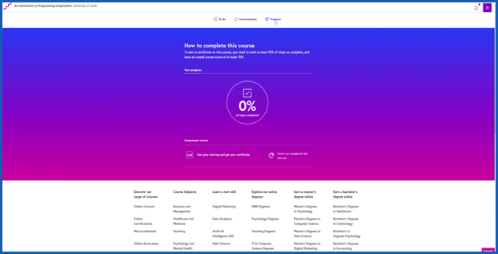
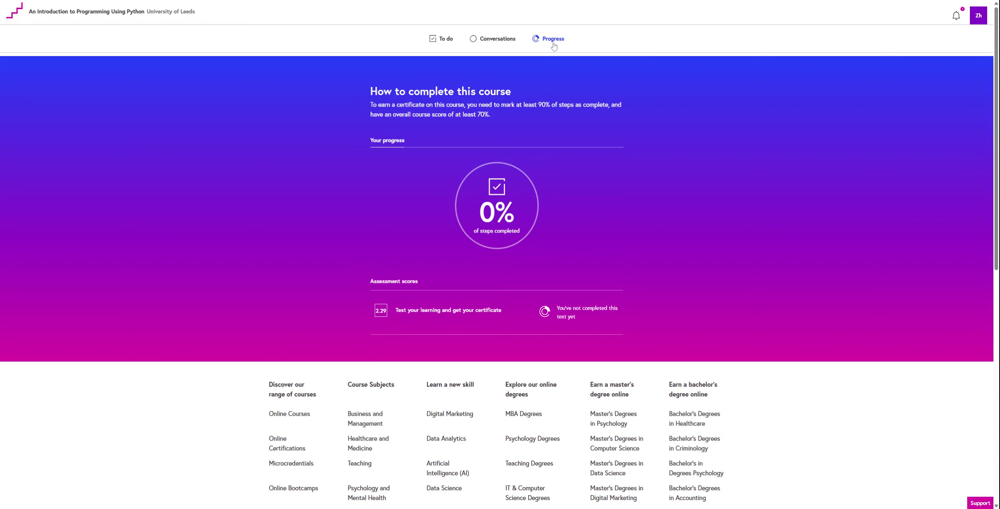
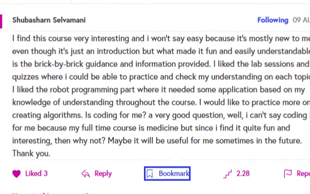
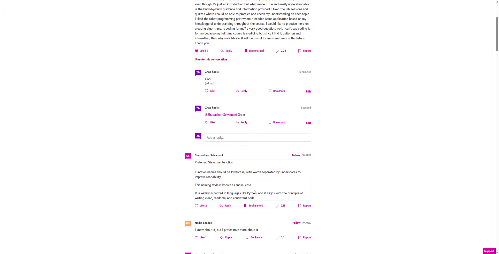
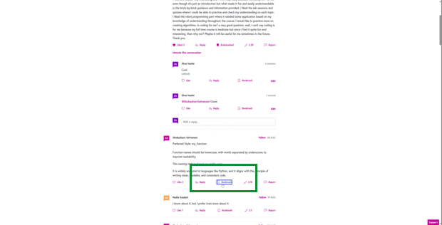
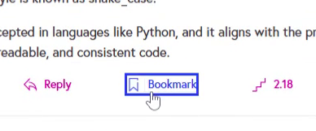

screenshot_0 · full
[2560, 1304] → [2560, 1304] · 保留像素 100.0% · 场景 0


坐标：[0, 0, 2560, 1304] · 原因：first_screenshot
算法版本：experimental_theme_aware_per_step_v2。仅用于预览，生成流程未修改。
返回任务总览 · 查看全部步骤拼图 · 查看算法判断 JSON
左侧为原图预览和选区（绿色：裁剪；蓝色：保留整图），右侧为此算法的输出预览；实验版尚未用于生成。点击图片查看原尺寸；预览自动缩放。像素减少比例不等于 token 减少比例。
[2560, 1304] → [2560, 1304] · 保留像素 100.0% · 场景 0
坐标：[0, 0, 2560, 1304] · 原因：first_screenshot
[2560, 1304] → [2560, 1304] · 保留像素 100.0% · 场景 1
原图与选区

算法输出预览

坐标：[0, 0, 2560, 1304] · 原因：large_visual_change
[2560, 1304] → [2560, 1304] · 保留像素 100.0% · 场景 2
坐标：[0, 0, 2560, 1304] · 原因：large_visual_change
[2560, 1304] → [1640, 1304] · 保留像素 64.1% · 场景 2
坐标：[920, 0, 2560, 1304] · 原因：localized_change
[2560, 1304] → [1640, 1135] · 保留像素 55.8% · 场景 2
坐标：[920, 169, 2560, 1304] · 原因：localized_change
[2560, 1304] → [520, 175] · 保留像素 2.7% · 场景 2
坐标：[1451, 346, 1971, 521] · 原因：localized_change
[2560, 1304] → [605, 379] · 保留像素 6.9% · 场景 2
算法输出预览

坐标：[976, 442, 1581, 821] · 原因：localized_change
[2560, 1304] → [559, 181] · 保留像素 3.0% · 场景 2
坐标：[1106, 640, 1665, 821] · 原因：localized_change
[2560, 1304] → [2560, 1304] · 保留像素 100.0% · 场景 2
坐标：[0, 0, 2560, 1304] · 原因：changes_spread_keep_full
[2560, 1304] → [1637, 1123] · 保留像素 55.1% · 场景 2
坐标：[923, 181, 2560, 1304] · 原因：localized_change
[2560, 1304] → [1637, 1124] · 保留像素 55.1% · 场景 2
坐标：[923, 180, 2560, 1304] · 原因：localized_change
[2560, 1304] → [2560, 1304] · 保留像素 100.0% · 场景 2
算法输出预览

坐标：[0, 0, 2560, 1304] · 原因：changes_spread_keep_full
[2560, 1304] → [388, 161] · 保留像素 1.9% · 场景 2
原图与选区

算法输出预览

坐标：[1101, 952, 1489, 1113] · 原因：localized_change
[2560, 1304] → [388, 97] · 保留像素 1.1% · 场景 2
坐标：[1101, 1016, 1489, 1113] · 原因：localized_change